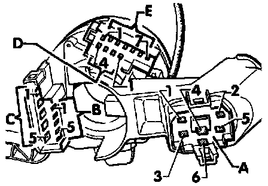

Connector Views
Steering column switches, connector wiring
Steering Column Switches, Connector Wiring:

A. Ignition/starter switch -D-
1. Ignition/starter switch -D-, terminal 15 (B+ with key on)
2. Ignition/starter switch -D-, terminal X (B+ with key on)
3. Ignition/starter switch -D-, terminal 50
4. Ignition/starter switch -D-, terminal 30 (B+)
5. Ignition/starter switch -D-, terminal SU
6. Ignition/starter switch -D-, terminal P
B. Connector, 5-point
1. Windshield wiper/washer switch -E22-, terminal 53b
2. Windshield wiper/washer switch -E22-, terminal 53a
3. Windshield wiper/washer switch -E22-, terminal 53
4. Windshield wiper/washer switch -E22-, terminal 53e
5. Windshield wiper/washer switch -E22-, terminal J
C. Connector, 5-point
1. Emergency flasher switch -E3-,terminal 49
2. Headlight dimmer/flasher switch -E4-, terminal 56b
3. Headlight dimmer/flasher switch -E4-, terminal 56
4. Headlight dimmer/flasher switch -E4-, terminal 56a
5. Headlight dimmer/flasher switch -E4-, terminal 30 (B+)
D. Connector, 4-point
1. Windshield wiper/washer switch -E22-, terminal L
2. Windshield wiper/washer switch -E22-, terminal T
3. Windshield wiper/washer switch -E22-, terminal 31 (GND)
4. Emergency flasher switch -E3-, terminal 15 (B+ with key on)
E. Connector, 7-point
1. Horn button, terminal 71
2. Emergency flasher switch -E3-, terminal 49a
3. Turn signal switch -E2-, terminal L
4. Parking light switch -E19-, terminal PL
5. Parking light switch -E19-, terminal P
6. Parking light switch -E19-, terminal PR
7. Turn signal switch -E2-, terminal R